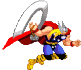

Só quando o deus desmemoriado aprendeu o significado da humilde e do amor aos seus
semelhantes é que seu poderes retornaram a ele. Durante anos, Thor levou essa vida dupla e enfrentou
diversos perigos, tanto sozinho quanto ao lado dos Vingadores. Por alguns curtos períodos, trocou sua
identidade, tornando-se Sigurd Jarlson, um operário de construção em Nova York, e Jake Olson, um enfermeiro.
Recentemente, uma mulher teve acesso ao martelo Mjolnir e se tornou a nova dona do nome Thor.
